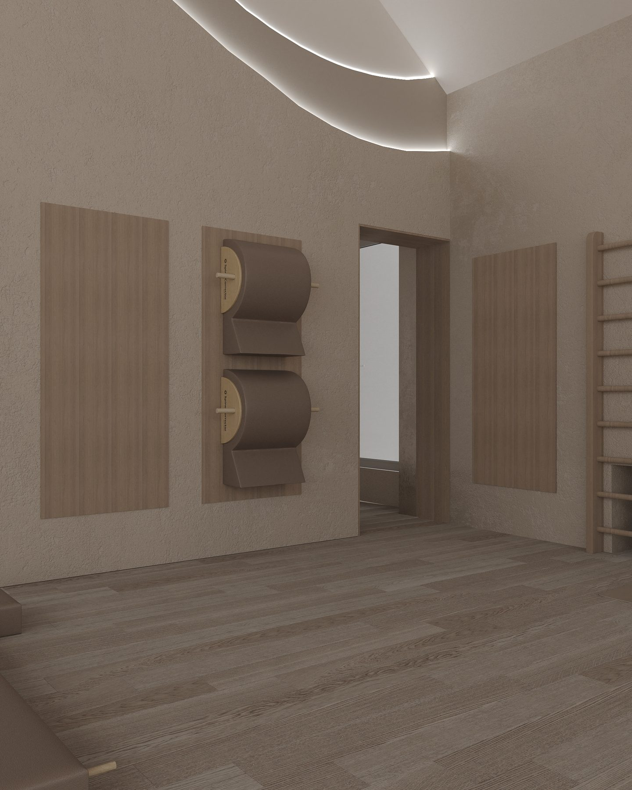

Пилатес во Всеволожске:
с чего начать новичку
Пилатес уверенно вошёл в число самых популярных направлений фитнеса — и не случайно. Это бережная, но эффективная система упражнений, которая укрепляет тело, улучшает осанку и возвращает ощущение лёгкости. Рассказываем, как начать заниматься пилатесом во Всеволожске и чего ждать от первой тренировки.
Что такое пилатес
Пилатес — это система упражнений, разработанная Йозефом Пилатесом в начале XX века. В её основе — осознанные, точные движения, которые прорабатывают глубокие мышцы-стабилизаторы, отвечающие за поддержку позвоночника и правильную осанку. В отличие от силовых тренировок, пилатес делает акцент не на весе и количестве повторений, а на качестве и контроле движения.
Чем полезен пилатес
- Укрепляет мышечный корсет и глубокие мышцы кора
- Улучшает осанку и снимает напряжение в спине
- Развивает гибкость, баланс и координацию
- Бережно работает с телом — подходит в любом возрасте и при восстановлении
- Снижает уровень стресса за счёт осознанного дыхания
Пилатес — это не про то, как тренироваться тяжелее. Это про то, как двигаться умнее.
Мат-пилатес и пилатес на реформере
Есть два основных формата занятий. Мат-пилатес выполняется на коврике с собственным весом тела и небольшим инвентарём — кольцами, мячами, лентами. Пилатес на оборудовании проходит на специальных тренажёрах: реформере, кадиллаке, стуле (wunda chair) и боди-бареле. Система пружин создаёт регулируемое сопротивление, благодаря чему упражнения становятся одновременно мягче для суставов и эффективнее для мышц.
В студии пилатеса «Гранд-Палас Спорт» во Всеволожске представлены все виды оборудования ведущих брендов, а просторный зал со стеклянной кровлей наполнен естественным светом — заниматься здесь по-настоящему приятно.
Как проходит первая тренировка
Новичку лучше начать с персональной или мини-групповой тренировки. Инструктор оценит вашу подготовку, особенности осанки и поставит технику дыхания. Первое занятие обычно знакомит с базовыми принципами: центрирование, контроль, концентрация, плавность и точность движений. Не нужна спортивная форма «на результат» — достаточно удобной одежды и носочков с противоскользящим покрытием.
С чего начать
Чтобы записаться на пилатес во Всеволожске, оставьте заявку на сайте или позвоните в клуб — мы подберём инструктора и удобное время, расскажем о форматах занятий и абонементах. Первый шаг к красивой осанке и здоровой спине проще, чем кажется.